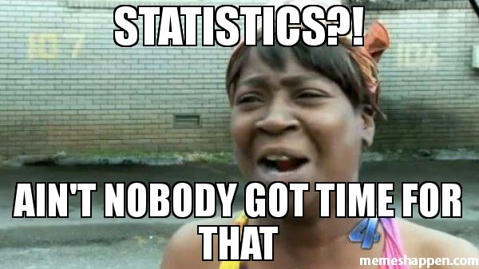

Welcome
Preface
1
Preliminaries
1.1
Stages of the statistical process
1.1.1
Formulating Research Questions
1.1.2
Collecting Data
1.1.3
Analysis
1.2
Public Use Microdata
1.2.1
ACS
1.3
Using R
2
Data and data management
2.1
First step–load packages
2.2
Second step–load data
2.2.1
Viewing data
2.3
Cleaning data
2.3.1
The Pipe
2.3.2
Looking at one variable
2.3.3
Types of variables
2.3.4
Mutate
2.3.5
Recode
2.3.6
Putting it all together with several variables
2.4
Saving your clean data to a file
2.5
Filtering rows
2.6
Counting and Summarizing
2.6.1
Categorical
2.6.2
Numeric
3
Describing distributions of variables
3.1
Categorical Variables
3.1.1
Graphs
3.2
Numeric variables
3.2.1
Shape
3.2.2
Outliers
3.2.3
Center and Spread
4
Relationships between variables
4.1
Falsifiability
4.2
Two categorical variables
4.2.1
Row and Column Percentages
4.2.2
Graphing – Bar Plot
4.2.3
An Example with a Hypothesis
4.3
Numeric and Categorical Variable
4.3.1
Another Example
4.3.2
Another
4.4
Two Numeric Variables
4.4.1
Homeowners
5
Inference
5.1
Sample Distribution
5.1.1
Simulating the sample distribution
5.2
Normal Distribution
5.3
Confidence Intervals
5.4
OLD VERSION
5.5
Corona Virus
5.6
Sample Distribution
6
Regression
6.1
Simple Linear Regression
6.2
Multiple Regression
6.3
Logistic Regression
7
Tests of Independence
Learn Statistics with Public Use Microdata
Learn Statistics with Public Use Microdata
Data Informed Decision Making for Profit and Power
Emmanuel A. Garcia
Spring 2019, 2020-04-29
Welcome

These are the course notes for MATH-159.